※こちらの記事はClaude 3.5 SonnetのAIで作成したものに一部加筆しました。
2024.11に食べました😄沖縄本島内の沖縄そば屋を全て巡りたいという目標を持って、少しずつ食べ歩いています。
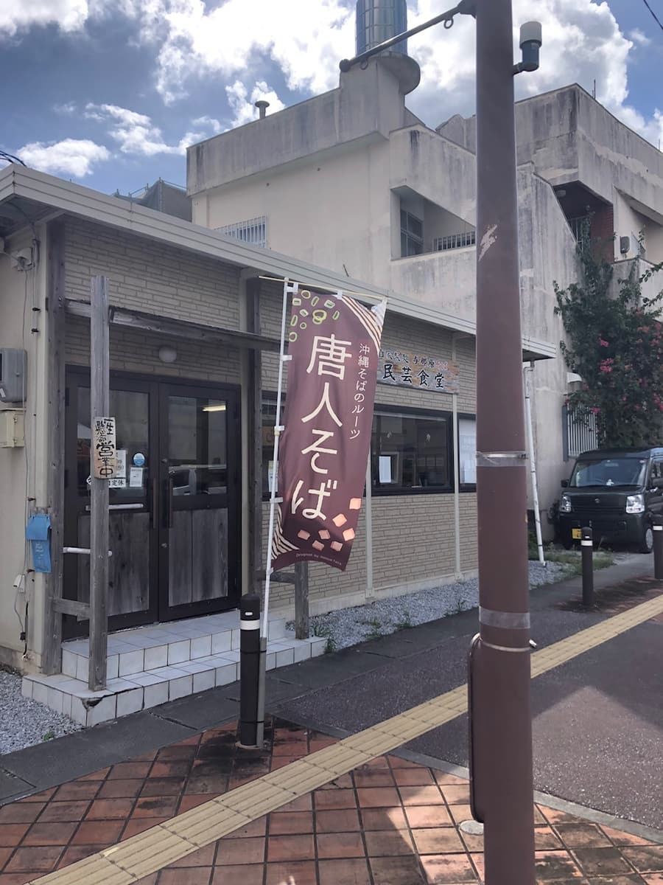
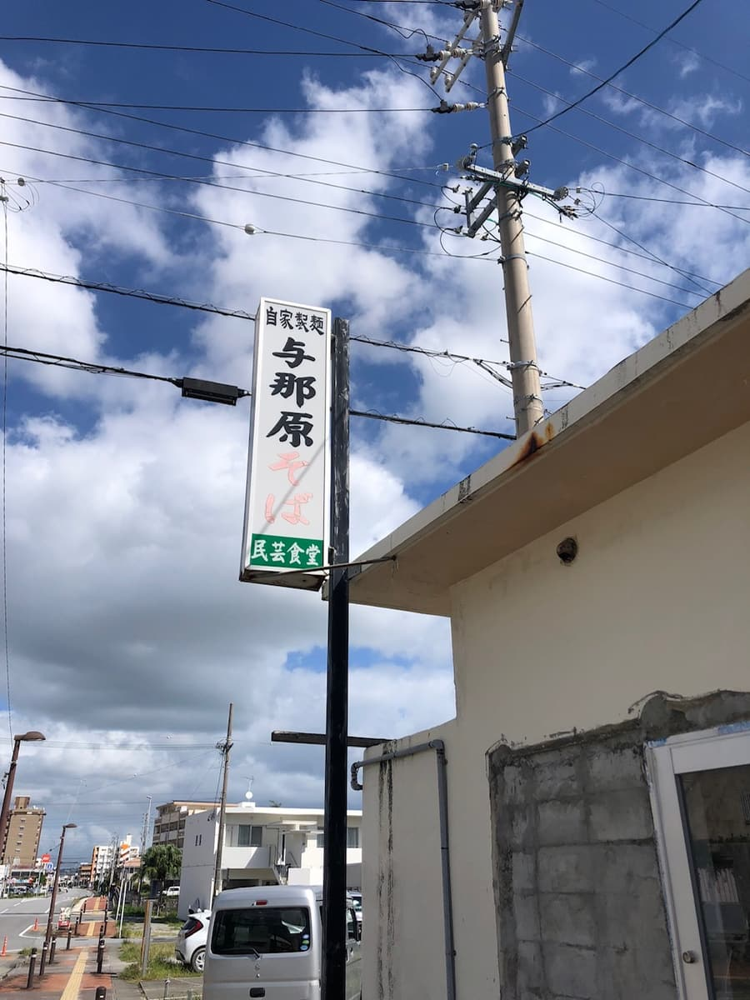
今回は与那原町与那原にある「民芸食堂」さんをご紹介します。こちらのお店は「第14回沖縄そばスタンプラリー」の参加店ではないのですが、沖縄そばのルーツである「唐人そば」を発売しているとして紹介されていたので、気になって訪問してみました😄
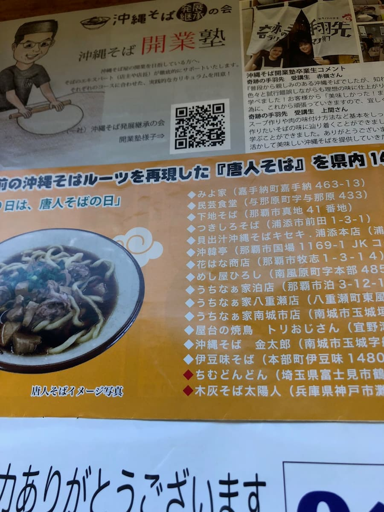
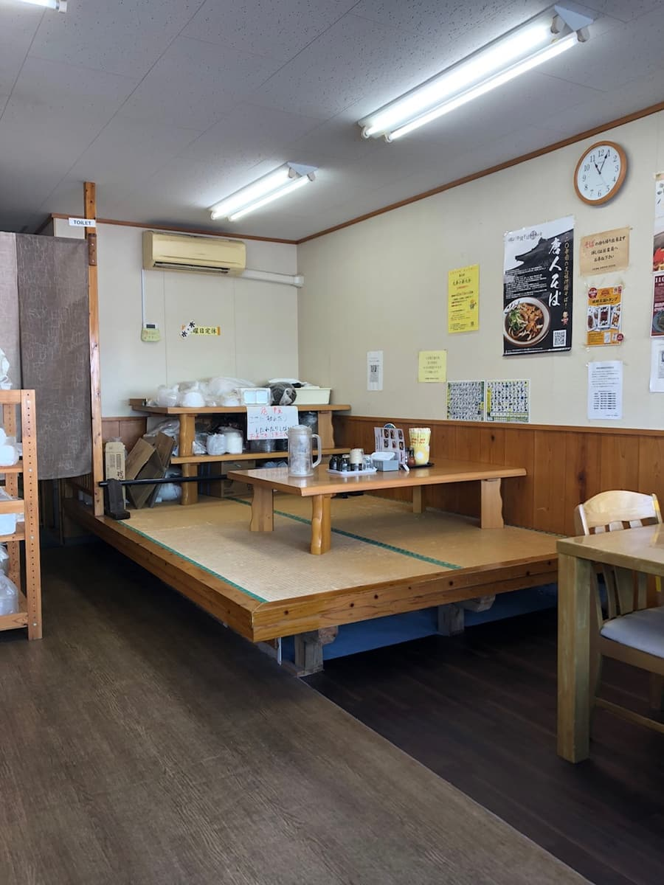
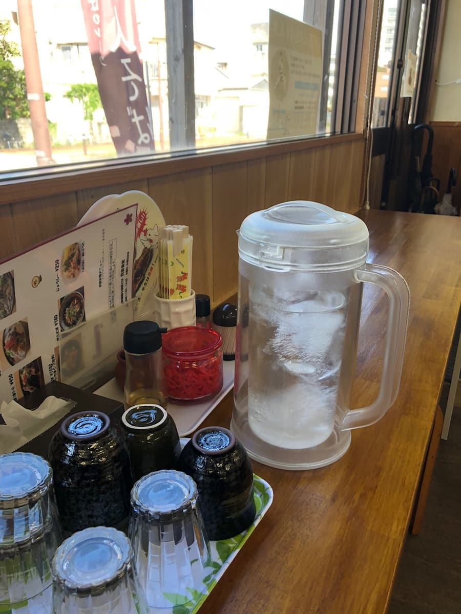
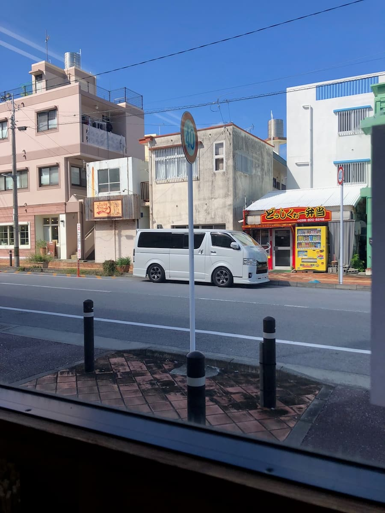
店内に入ると、畳敷きの座敷があり、昔ながらの食堂の雰囲気です。土曜日のオープン時間に合わせて訪問したのですが、地元のお客さんがすでに数名待っていて、人気店なんだなと感じました😊
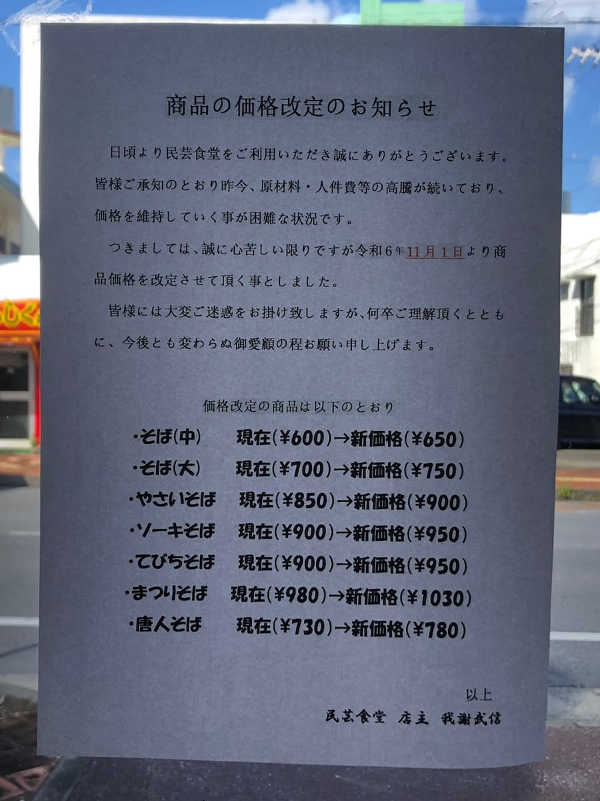
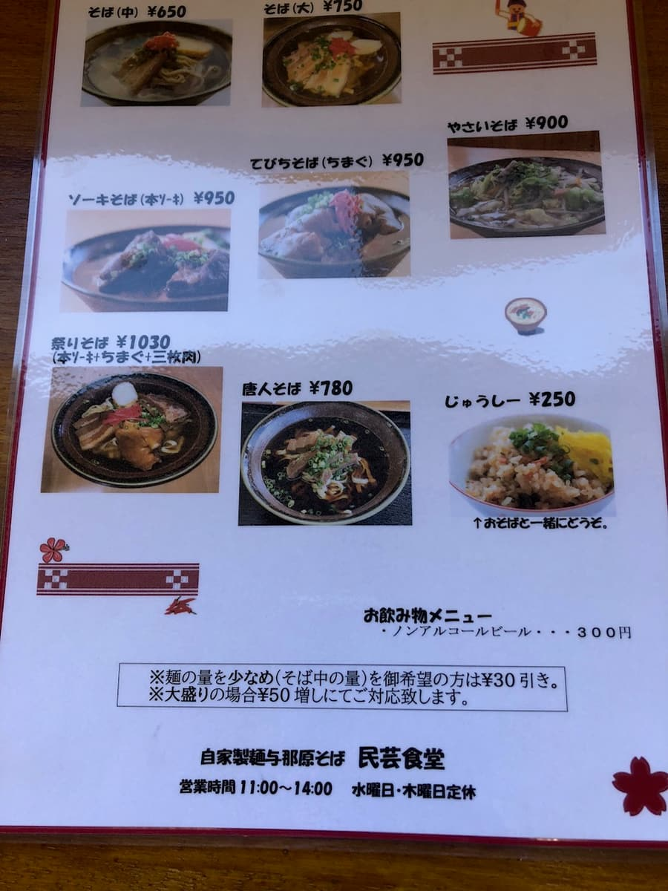
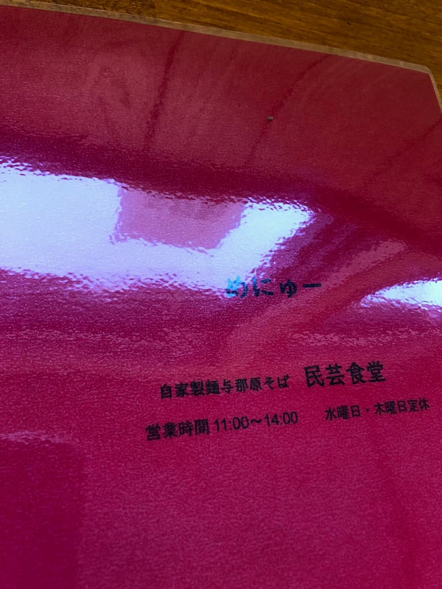
メニューを見ると「ソーキそば」や「てびちそば」など、王道の沖縄そばメニューが揃っています。今回は王道の「ソーキそば」を注文することにしました🍜
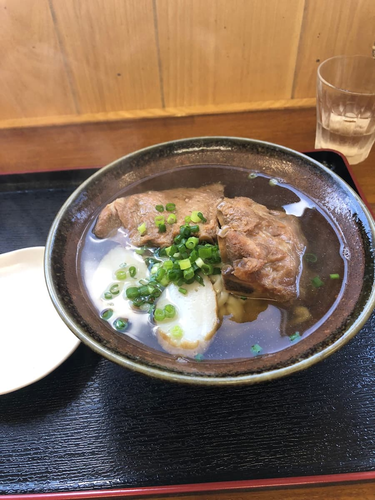
まずはスープを一口。最初は透明なスープから鰹出汁かなと思ったのですが、実は鰹と豚骨の合わせ出汁で、ほんのりと豚骨が効いた優しい味わいでした。普通に美味しい感じですね😋
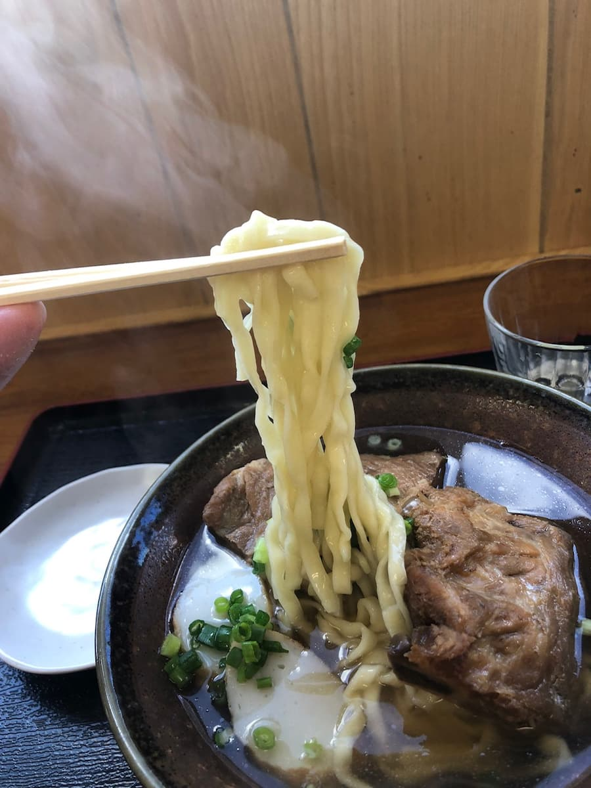
次に麺を頂きます。自家製麺を使用していて、名護地域でよく見かける平麺タイプです。食感は柔らかめで、スープとよく絡みます。
具材のソーキは、あっさりめの味付けで柔らかいのですが、少し筋感が残っている箇所もありました。全体的に優しい味付けの沖縄そばという印象です。
評価（9点/15点）：地元のお客さんに愛されているお店という印象を受けました。オープン早々から来店されるお客さんも多く、日常的に通われている方が多いのだと思います。味は普通に美味しいですが、ソーキの筋感が気になりました。与那原町にお越しの際は、地元の人々に愛されている食堂の雰囲気を味わいに、一度立ち寄ってみてはいかがでしょうか？😊
麺 ：★★★☆☆（3）
スープ：★★★☆☆（3）
具 ：★★★☆☆（3）